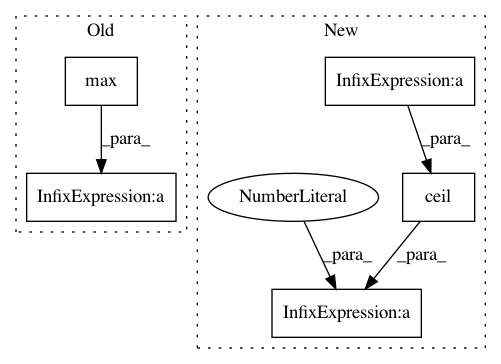

eefe9f1e1e0b5c090fa0d49e57771aa5e9720b05,nn_dataflow/BufShrScheme.py,BufShrScheme,nhops_wide_fetch_once,#BufShrScheme#Any#Any#Any#,183
Before Change
nhops_rot_perstep = self.nhops_rotate_all(dce, subgrp_size) \
/ (subgrp_size - 1)
return nhops_rot_perstep * max(0, fetch_width - 1)
def _subgrp_dim(self, dce, subgrp_size):
"""
Decide the subgroup dimensions and the priority dimension index.
After Change
nhops_rot_perstep = self.nhops_rotate_all(dce, subgrp_size) \
/ (subgrp_size - 1)
ceil_width = math.ceil(fetch_width - 1e-6)
// Total steps = 0 + 1 + 2 + ... + (cw - 1) - (cw - 1) * (cw - w)
total_steps = (ceil_width - 1) * ceil_width / 2 \
- (ceil_width - 1) * (ceil_width - fetch_width)
return nhops_rot_perstep * total_steps / fetch_width
In pattern: SUPERPATTERN
Frequency: 3
Non-data size: 5
Instances
Project Name: stanford-mast/nn_dataflow
Commit Name: eefe9f1e1e0b5c090fa0d49e57771aa5e9720b05
Time: 2017-07-25
Author: mgao12@stanford.edu
File Name: nn_dataflow/BufShrScheme.py
Class Name: BufShrScheme
Method Name: nhops_wide_fetch_once
Project Name: matplotlib/matplotlib
Commit Name: eaa7025a37930ddfac810721c14452548db87ebc
Time: 2019-04-26
Author: 2836374+timhoffm@users.noreply.github.com
File Name: examples/lines_bars_and_markers/scatter_hist.py
Class Name:
Method Name:
Project Name: matplotlib/matplotlib
Commit Name: 7ad4996b6106e601ed7136c11e17abbb149ef889
Time: 2019-04-27
Author: nelle.varoquaux@gmail.com
File Name: examples/lines_bars_and_markers/scatter_hist.py
Class Name:
Method Name: